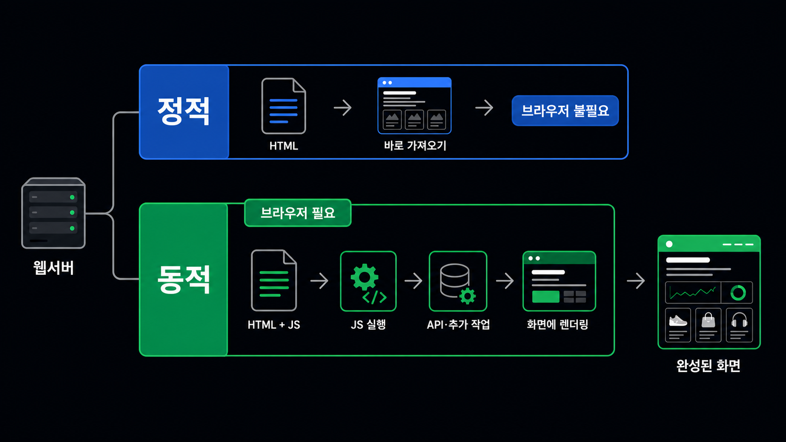
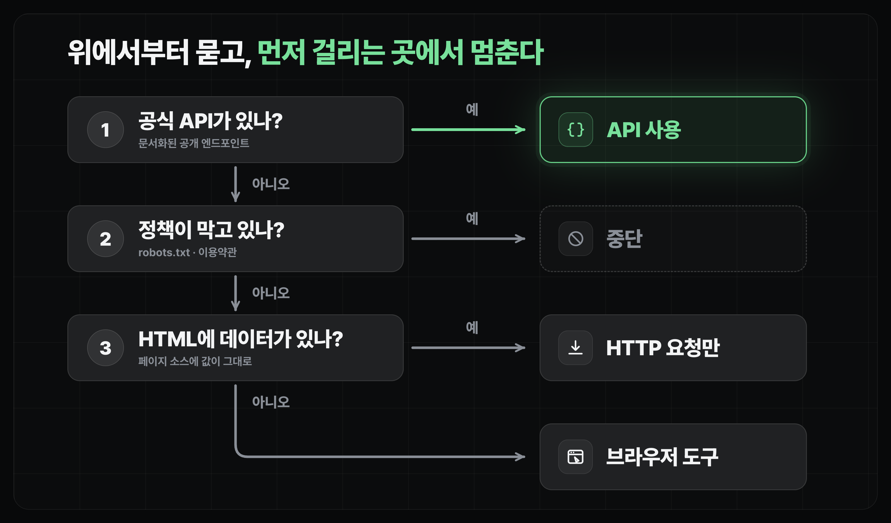

장소 수집을 위한 크롤링
장소 데이터 수집을 위한 크롤링 이해하기
크롤링이 무엇인지, API·정적·동적 방식이 어떻게 다른지, 그리고 플랫폼별 정책을 어떻게 확인하는지 판단 기준을 잡습니다.
얻어갈 것
- 크롤링이 무엇이고, API 방식과 브라우저 방식 중 무엇을 먼저 시도할지 판단할 수 있습니다.
- 정적 페이지와 동적 페이지를 구분해서, 브라우저 도구가 정말 필요한 경우와 아닌 경우를 가릴 수 있습니다.
- 네이버·구글·인스타그램 같은 실제 플랫폼의 크롤링 정책을 확인하는 법을 알고, "긁어도 되나"를 스스로 점검할 수 있습니다.
정보를 가져오는 두 가지 길: API와 브라우저
- API는 서비스 쪽에서 "이 데이터 여기서 가져가세요"라고 정식으로 열어 준 창구입니다. 지정된 API를 호출하면 깔끔한 데이터가 바로 옵니다.
- 브라우저 방식(스크래핑)은 그런 창구가 없을 때, 사람이 보는 화면을 프로그램이 대신 읽어 오는 방식입니다.
- 순서는 항상 API가 먼저, 브라우저는 그다음입니다. API가 있으면 더 안정적이고, 약관상으로도 깔끔합니다.
브라우저 크롤링: 정적 vs 동적
브라우저는 먼저 HTML을 받아 오고, 거기 적힌 CSS·JS를 웹 서버에서 계속 받아 와 실행하면서 화면을 완성합니다. 이 로드 과정을 알면 "어디까지 가져와야 원하는 정보가 나오는가"를 판단할 수 있습니다. 이게 정적/동적을 가르는 기준입니다.

정적 페이지 — HTTP 한 번이면 끝
- 처음 받은 HTML/CSS 안에 원하는 정보가 이미 다 들어 있는 경우입니다.
- JavaScript를 실행하지 않아도 되니, 브라우저 도구 없이 HTTP 요청 한 번으로 가져올 수 있습니다.
- 가장 저렴하고 빠릅니다. 블로그·뉴스 기사 같은 것들이 보통 여기 속합니다.
동적 페이지 — 브라우저가 필요
- 브라우저에서 JavaScript를 실행해야 내용이 나타나는 경우입니다.
- 페이지가 내부적으로 API를 호출해서 정보를 화면에 그리고, 그다음에야 정보에 접근할 수 있습니다.
- 그래서 브라우저를 실제로 띄워야 하고, 느리고 비쌉니다. 지도 서비스의 장소 상세 정보, 인스타그램 피드 같은 것들이 여기 속합니다.
어느 쪽인지 판별하기
판단은 간단합니다. 먼저 HTTP로 HTML만 받아 보고, 원하는 정보가 그 안에 그대로 있는지 확인합니다.
P1이 페이지, 정적으로 긁을 수 있나 확인
이 페이지가 정적인지 동적인지 확인해줘: <URL>
- curl로 HTML만 받아서, 내가 찾는 정보("<찾는 정보>")가 그 안에 있는지 봐줘
- 있으면 브라우저 없이 긁을 수 있다는 뜻이고, 없으면 브라우저 도구가 필요하다고 알려줘브라우저 도구 고르기
- 전통 강자: 옛날부터 많이 쓰인 대표 도구는 Selenium, Puppeteer, Playwright입니다.
- 요즘은 agent가 쓰기 좋게 만들어진 브라우저 도구들도 나오고 있습니다. browser-harness, agent-browser 같은 것들입니다.
봇 감지(bot detection)와 진짜 크롬
- Playwright는 자동화용 Chromium을 새로 띄우는 방식이라 봇 감지에 잘 걸립니다. 그래서 stealth mode 같은 확장을 붙여 쓰기도 합니다.
- 가장 좋은 건 우리가 평소 쓰는 크롬 자체를 agent가 조작하게 하는 것입니다. 이런 방식을 도와주는 도구로 browser-harness, Claude 전용인 Claude in Chrome이 있습니다.
- 검색 엔진처럼 감지가 민감한 사이트에서는 같은 소규모 작업도 자동화용 브라우저 쪽이 CAPTCHA·차단에 먼저 걸릴 수 있습니다.
정책과 저작권 확인하기
긁기 전에 확인할 것:
- 약관(ToS) — 그 사이트가 자동 수집을 금지하는지.
- robots.txt — 크롤러에게 어디까지 허용하는지 적어 둔 파일.
https://<도메인>/robots.txt로 누구나 볼 수 있습니다. - 개인정보·저작권 — 남의 사진, 리뷰 원문, 연락처 같은 건 함부로 옮기지 않습니다.
- 서버 트래픽 — 짧은 시간에 너무 많이 요청하면 상대 서버에 부담이 되고, 차단당할 수 있습니다.
같은 "크롤링 금지"라도 플랫폼마다 기준이 다릅니다(2026년 7월 기준).
| 플랫폼 | 정책 | 공식 창구 |
|---|---|---|
| 네이버 | robots.txt가 사실상 전체 Disallow. 약관으로도 자동 수집 금지 | 검색 오픈 API (지역·블로그·뉴스 등) |
| 구글 | 검색 결과 자동 수집을 약관으로 금지, /search도 Disallow. 최근엔 검색결과 수집 업체를 상대로 소송도 진행 | Google Places API (유료) |
| 인스타그램·스레드 | robots.txt 첫 줄부터 "서면 허가 없는 자동 수집 금지" 명시. 스크래핑 감지 시 계정 정지가 흔함 | Graph API (승인 필요) |
"내 계정으로 로그인해서 긁으면 되지 않을까?"
자연스럽게 드는 생각이지만, 오히려 더 위험한 쪽입니다.
- 로그인하는 순간 나는 그 서비스 약관에 동의한 회원으로서 긁는 것이 됩니다. 자동 수집 금지 조항이 나에게 직접 적용됩니다.
- 가장 흔한 결과는 법적 문제 이전에 계정 정지입니다. 특히 인스타그램 계열은 감지가 빠릅니다.
- "agent가 내 화면을 대신 읽어 주는 것"(개인 브라우징 자동화)과 "긁은 데이터를 내 서비스 DB에 넣어 다시 서비스하는 것"은 완전히 다른 문제입니다. 후자로 갈수록 리스크가 커집니다.
반대로, 리스크를 낮추는 안전 패턴은 이렇습니다.
- 로그인 안 된 크롬 프로필로 검색합니다. 검색에는 로그인이 필요 없습니다.
- agent에게는 URL 후보만 뽑게 하고, 본문·리뷰·사진은 긁지 않습니다.
- 내가 URL을 직접 열어 확인하고, 이름·주소 같은 사실 정보만 직접 등록합니다.
"긁어도 되나 + 어떻게 긁나" 판단 흐름

- 공식 API가 있나? → 있으면 API를 씁니다.
- 없으면, 약관과 robots.txt가 허용하나? 공개된 정보이고 개인정보가 아닌가?
- 나 혼자 쓸 데이터인가, 서비스에 넣을 데이터인가? → 서비스용일수록 보수적으로.
- 통과했으면, 정적으로 가져와지나? → 되면 HTTP로 저렴하게 끝냅니다.
- 안 되면 그때 브라우저 도구를 씁니다. 하나라도 걸리면 멈춥니다.